No Code Website BuilderThe deliberate arrangement of visual elements within a camera frame to tell a story, guide the viewer's eye, and evoke specific emotions.
the balanced arrangement of visual elements where two halves of an image or artwork mirror each other across a central axis or point
The objects on both sides are balanced around the centre, creating a symmetrical composition.
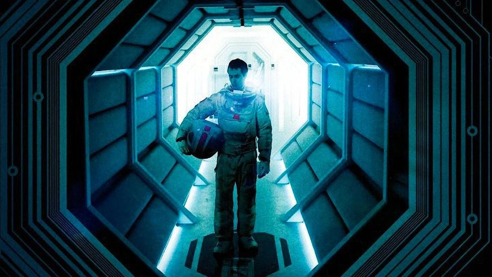
The subject is placed in the centre, while the left and right sides have a similar arrangement.
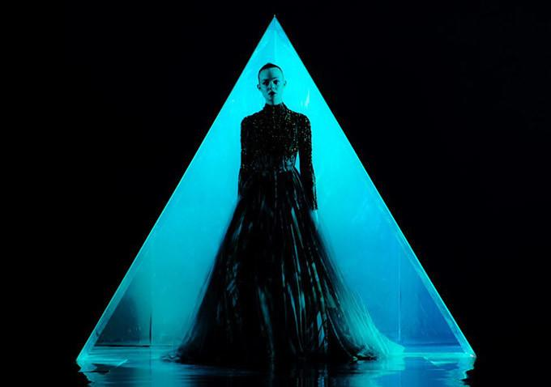
The table and surrounding elements create a balanced arrangement on both sides.
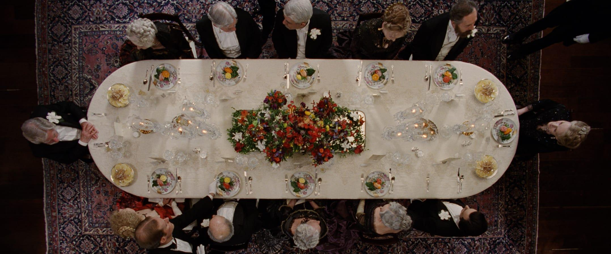
The central framing and repeated architectural elements create a sense of symmetry.
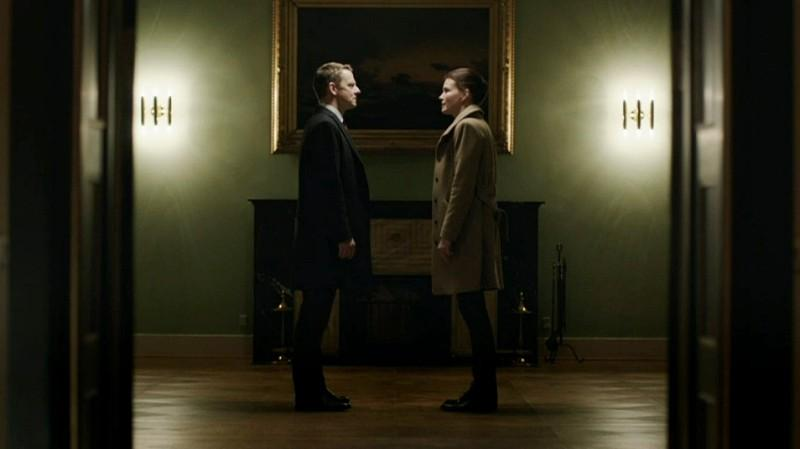
a perspective that looks straight down at a subject or location from above, as if seen from the sky or directly overhead at a 90-degree angle.
The camera looks up at the character from a low position. The outstretched hand appears larger because it is closer to the camera, creating a strong sense of depth and perspective.
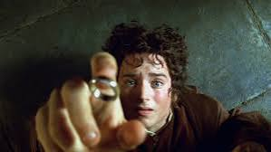
The camera is positioned directly above the character, looking down at her as she lies on the bed. This top-down perspective clearly shows the arrangement of the pillows, blanket and bed, making the overhead composition easy to recognise.
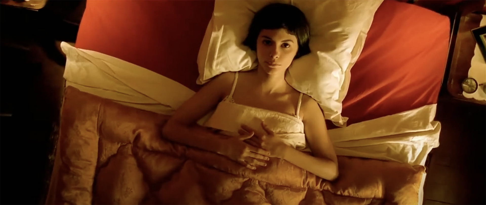
The scene is photographed from above, making the arrangement of objects clearly visible.
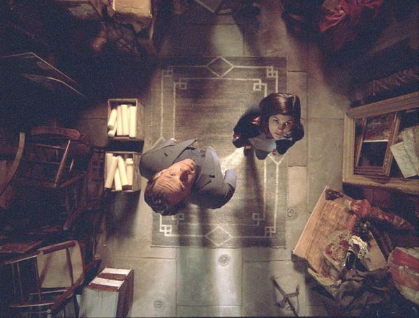
The overhead angle allows viewers to see the scene from directly above.
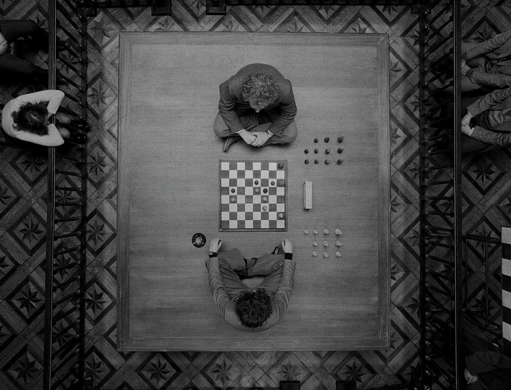
a visual composition technique in photography, art, and design where natural or man-made lines guide the viewer's eyes through an image directly toward a primary subject or focal point
The parallel lines of the corridor guide the viewer’s eyes toward the person at the end.
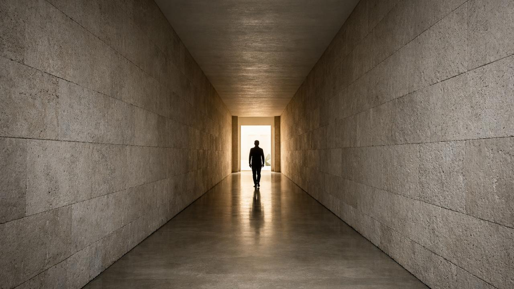
The red dirt road creates a strong line through the landscape, directing the viewer’s eyes toward the figure and drawing attention to the distance.
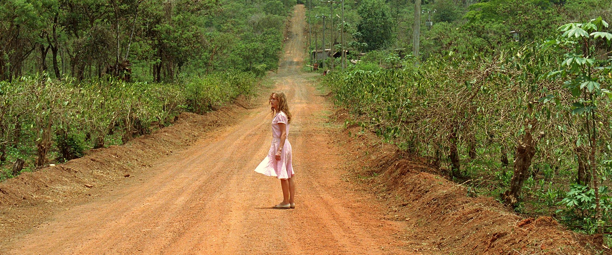
The straight architectural lines lead the viewer’s eyes toward the main subject and create a strong sense of depth.
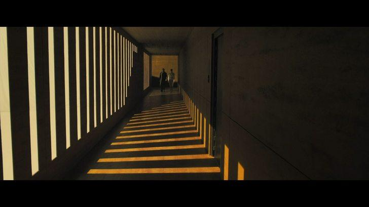
The repeating lines and curved structure of the spacecraft guide attention toward the astronaut.
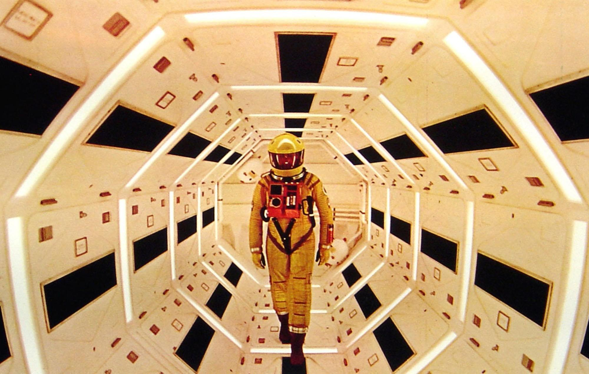
A camera or photography technique where the camera is placed below the subject's eye level (ranging from chest or waist height down to the ground) and tilted upward
The camera is positioned at a low angle, looking up at the character’s face. This perspective makes the character appear more imposing and creates a dramatic atmosphere.
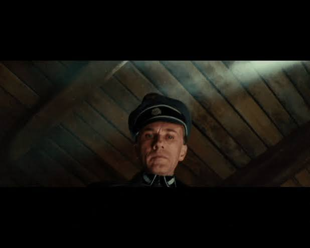
The camera looks upward at the character, emphasising their height and presence.
The low camera angle makes Batman appear powerful and dominant in the frame.
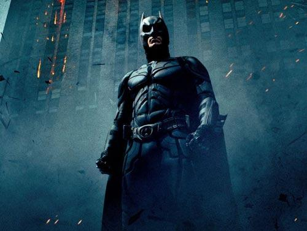
The camera is positioned below the Joker, looking up at him. This low-angle perspective makes him appear more powerful and intimidating, while the tall buildings in the background emphasise his dominance in the scene.
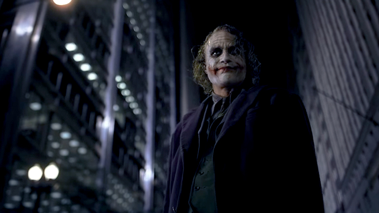
No Code Website Builder